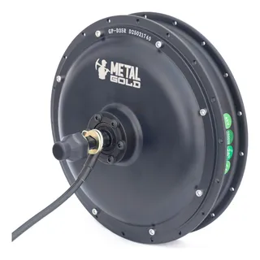

O motor de cubo de roda é um componente crucial em sistemas de transmissão, responsável por converter a energia elétrica em energia mecânica (movimento rotativo). Ele é amplamente utilizado em veículos e equipamentos industriais, onde a eficiência e a confiabilidade são fundamentais para o desempenho do sistema.
Os motores de cubo podem ser implementados com acionamento direto ou engrenagens planetárias. Eles giram a roda por meio de um rotor axial, interno ou externo , com comutador escovado ou sem escovas .
Os motores de cubo são atraentes do ponto de vista do design devido à sua flexibilidade. Podem ser usados para tração dianteira, traseira ou em rodas individuais. São compactos e, portanto, permitem mais espaço para passageiros, carga ou outros componentes do veículo. Permitem uma melhor distribuição de peso em comparação com um motor único e eliminam a necessidade de muitos dos componentes de transmissão em veículos tradicionais, como transmissões, diferenciais e eixos, o que reduz o desgaste e as perdas mecânicas. Os motores de roda de alta tensão devem ser robustos contra danos aos seus cabos e componentes de alta tensão.